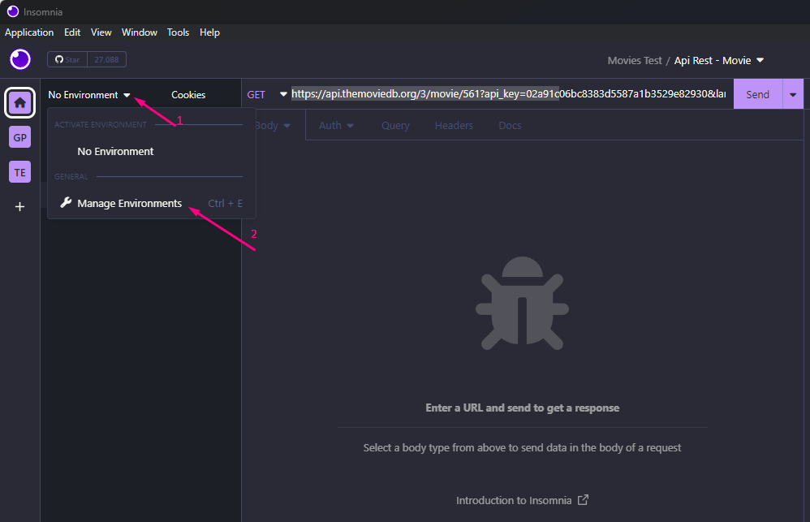
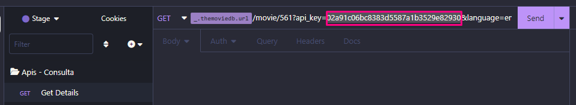

Insomnia
Criado em: 06/03/2023
Insomnia é uma ferramenta Open Source para
desenvolvimento/teste de API Clients.
Utilizado para envio de requisições REST, SOAP, GraphQ e GRPC.
Realize o download do Insomnia no site https://insomnia.rest/download:
Clique duas vezes sobre o aplicativo baixado:
Deverá apresentar aplicação aberta conforme abaixo:
Clique no menu Application na opção Preferences:
Clique na aba Plugins:

Preencha o campo “npm-package-name” com o nome do plugin desejado e clique no botão Install Plugin:
Plugin do exemplo insomnia-plugin-theme-dracula:

Após clicar no botão Install Plugin deverá apresentar a instalação com sucesso conforme abaixo:
Clique no menu Application na opção Preferences:
Clique na aba Themes:
Selecione o theme desejado clicando sobre ele e após feche tela de preferências:
Observação: Theme aplicado com sucesso conforme o exemplo acima.
Clique no botão Personal Projects:
Clique em criar um novo projeto conforme item 1, após insira o nome desejado para o projeto e clique no botão "Create":
Clique na opção “New Collection”, insira o nome e clique no botão “Create”:
Será direcionado para collection criada conforme abaixo:
Para retornar ao projeto para selecionar e/ou criar outras collections, clique sobre o nome do projeto conforme item 1 ou clique sobre a opção “Personal Projects” conforme item 2:
Selecione o projeto e a collection que deseja configurar a primeira Api rest. Exemplo abaixo:
Clique na opção “New Folder” para criação e melhor organização para iniciar configuração de uma Api rest (esse passo não é obrigatório, apenas é uma boa pratica de organização):
Insira o nome desejado e clique no botão “Create”:
Seleciona na pasta criada a opção “New HTTP Request”:
Clique com o botão direto do mouse sobre a api criada e selecione a opção “Rename” para inserir o nome amigável para a nova api:
Inseria o nome amigável ou extado da api e clique no botão “Rename”:
Observação: Para esse manual do Insomnia será utilizado as apis de filmes disponibilizadas pelo site https://developers.themoviedb.org/3/movies/get-movie-details
Insira o endpoint e método do serviço:
Os métodos de uma API REST são baseados no protocolo HTTP e são utilizados para especificar o tipo de operação que está sendo realizada na solicitação. Os principais métodos da API REST são:
GET: usado para recuperar dados de um recurso existente.
POST: usado para criar um novo recurso.
PUT: usado para atualizar completamente um recurso existente.
PATCH: usado para atualizar parcialmente um recurso existente.
DELETE: usado para excluir um recurso existente.
OPTIONS: O método OPTIONS é usado para obter informações sobre as
opções disponíveis para um recurso específico, como quais métodos HTTP são permitidos
para o recurso ou quais cabeçalhos devem ser incluídos na solicitação.
HEAD: O método HEAD é semelhante ao método GET, mas retorna apenas os
cabeçalhos de resposta, sem o corpo da resposta.
O endpoint (URL) pode ser preenchido digitando ou com Ctrl – C e Ctrl – V, exemplo preenchido:
Observação 1: O endpoint(URL) que será utilizado para teste será o
https://api.themoviedb.org/3/movie/{movie_id}?api_key=<
Observação 2: O Path Parameters são variáveis que fazem parte da URL do endpoint da API. Eles permitem que os desenvolvedores definam um valor variável em uma URL, que pode ser usado para especificar um recurso específico que o serviço deseja acessar.
Observação 3: A Query String é uma parte da URL que contém parâmetros adicionais que podem ser usados para filtrar, classificar ou paginar os resultados da solicitação. A Query String começa após o caractere de interrogação "?" na URL e consiste em um ou mais pares de chave/valor separados por "&".
Alterando o endpoint(URL) para inserir o id do filme e a chamada para execução da api:
De:
https://api.themoviedb.org/3/movie/{movie_id}?api_key=api_key&language=en-US
Para:
https://api.themoviedb.org/3/movie/561?api_key=02a91c06bc8383d5587a1b3529e82930&language=en-US
Observação 1: O id do Filme pode ser capturado do site
https://www.themoviedb.org/, onde ao clicar em algum filme será
apresentando na url o id, conforme exemplo
https://www.themoviedb.org/movie/561-constantine,
id é o 561.
Observação 2: A chave que vamos utilizar nas apis do movies será 02a91c06bc8383d5587a1b3529e82930, caso desejar possuir sua chave exclusiva se cadastre no site e na área logada em configurações acesse o menu “Api” para criar sua chave.
Clique no botão “Send” para realizar execução do serviço:
Após realizar execução do serviço deverá retornar o status da chamada e o response da consulta e/ou criação se houver do recurso executado:
Os códigos de status de retorno mais comuns são:
200 OK: Indica que a solicitação foi bem-sucedida e que o servidor
retornou com sucesso os dados solicitados pelo cliente.
201 Created: Indica que a solicitação de criação de um novo recurso foi
bem-sucedida e que o recurso foi criado com êxito.
204 No Content: Indica que a solicitação foi bem-sucedida, mas o
servidor não tem conteúdo para retornar.
400 Bad Request: Indica que a solicitação enviada pelo cliente não pôde
ser processada pelo servidor, pois contém dados inválidos ou incompletos.
401 Unauthorized: Indica que a solicitação não foi autorizada,
geralmente devido a autenticação ou autorização falha.
404 Not Found: Indica que o recurso solicitado pelo cliente não foi
encontrado no servidor.
500 Internal Server Error: Indica que ocorreu um erro interno no
servidor ao processar a solicitação.
O ambiente (environment) no Insomnia é uma maneira de gerenciar diferentes conjuntos de variáveis que podem ser usados em suas solicitações API. Essas variáveis podem ser usadas em suas solicitações API para diferentes fins, como autenticação, autorização, configurações de conexão, configuração path da url, configuração de Query String etc.
Clique na opção No Environment e após em Manage Environments:

Clique na opção Sub Environments e após em Environment:
Realize um duplo click para inserir o nome desejado para o ambiente:
Clique na opção Color e após em Assign Color:
Insira a cor desejada:
As variáveis são criadas como estrutura JSON, abaixo estamos criando a estrutura de objeto com nome themoviedb, que é referencia da onde está exposta api, pode ser inserido qualquer nome que melhor relacione com seu projeto, após está sendo criado a variável url e api-key para receber os valores fixos para esse ambiente:

Clique no botão “Close” para concluir a configuração.
Clique na opção No Environment e após em Use {Seu Ambiente}:
Ambiente selecionado deverá ser apresentado conforme acima.
Configurando a api Get Details utilizando as variáveis definidas no ambiente:
1- Delete a url https://api.themoviedb.org/3:
Mantenha curso do mouse antes do / e clique em CTRL + SPACE, será apresentada a variável de ambiente da url que foi criado, selecione a variável:
Deverá ser apresentado a variável conforme abaixo:
2- Delete o dado da Query String api_key:

Mantenha curso do mouse após o = e clique em CTRL + SPACE, será apresentada a variável de ambiente da api-key que foi criado, selecione a variável:
Deverá ser apresentado a variável conforme abaixo:
Clique no botão “Send” será efetuado a chamada do serviço com a configuração das variáveis conforme abaixo: